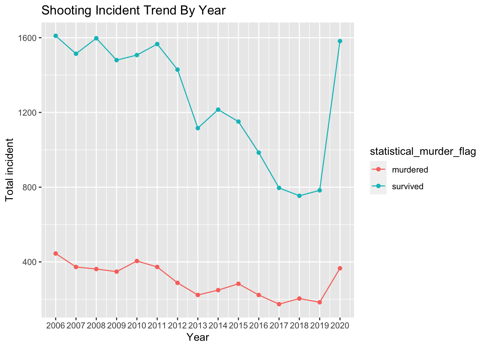
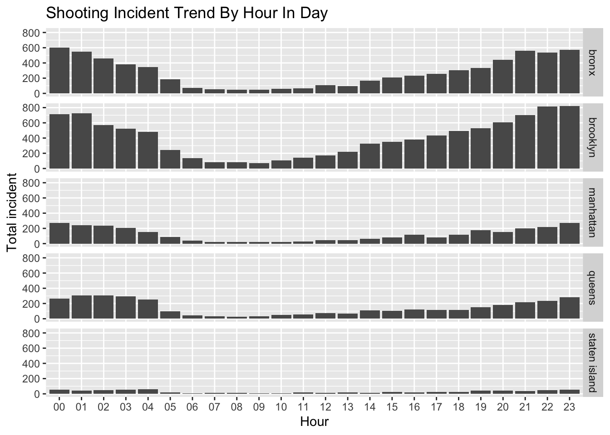
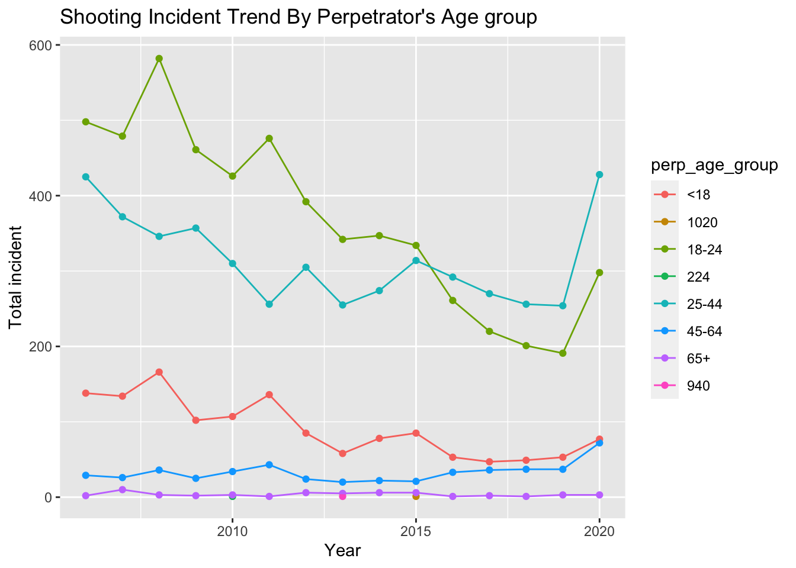

Project Report
Wen Cheng, Jiahao Fan, Yangruijue Ma (Anna), Renee Wang, Tianwei Zhao
Motivation
Living in NYC, we hear about all kinds of different crimes happening around us all the time. Out of those crimes, the shooting incidents concerns us the most because of its life-threatening nature. So, for this project, we are motivated to explore the shooting incidents in NYC, analyze general trends and characteristics of those incidents, and find risk factors that are potentially associated with them. By doing so, we intend to find some information on how to keep our own safety and avoid risky times, areas, and other factors that are closely related to shooting incidents.We hope the audience of our website will learn useful information about the profiles of shooting incidents, be aware of them, and stay safe!
Project goals
- Visualizing the distribution of the shooting incidents in NYC.
- Understanding and analyzing the risk factors that are related to shooting incidents.
- Discussing the correlation between risk factors and shooting incidents to analyze the measure we can take to keep our own safety.
- Building a model to predict future New York shooting occurrences in one month.
Research Questions
Initially, we wanted to compile data on the shooting incident in NYC from 2006-2010, and mark them on the map. Then based on the data, we try to find patterns of shooting incidents by year, sex, age, gender, location, hour of day. We hoped by understanding these to better protect ourselves.
Initial Questions:
- Which borough is most dangerous?
- Where do the shooting most happens?
- When do most of the shooting happens?
- Which age group of people is the most dangerous?
New Questions:
1.. Is there a relationship between unemployment rate and the incline of shooting incidents in 2020？
2. Is the rates of death per gunshoot differed between 2019 and 2020 in different borough？
3. Can we predict future New York shooting occurrences by construct time series analysis model？
Data
For this project, we mainly looked at the shooting incident data that we acquired from NYC open data. During the project, we also acquired data from other sources to help explain and analyze the findings we have from the shooting incident data.The details of the data and our cleaning methods will be elaborated below.
Data Sources
- NYC Shooting Incident Data:
NYPD Shooting Incident Data (Historic)
This data set contains 23,575 shooting incidents that occurred during January 01, 2016 to December 31, 2020. The data set was originally provided by the Police Department (NYPD). For each incident, information on the incident date, time, location (specific to the longitude and latitude of the incident), the perpetrator and the victim’s sex, race, and age group were provided.
- Unemployment Rate Data
We downloaded the monthly unemployment rate in New York City from January ,2010 to December, 2020 from FRED, Federal Reserve Bank of St. Louis. The original source of the data is U.S. Bureau of Labor Statistics.
- Population in each Police Precinct Data
We downloaded a cleaned data set on population in each police precinct data from this website. It’s source is the U.S Census Bureau.
- NYC Population by age group We downloaded a clean data set on population in each age group from this Projected Population 2010-2040 - Total By Age Groups
Data Cleaning and Tidying
- Shooting Incident Data
The main data set we used is the Shooting Incident Data. After downloading our data, we cleaned the data by renamed a few variable with reasonable names, re-coded some variables to present clear information, and wrote out a csv file with the cleaned data as the resulting data set that we will be using in the project.
data_hist =
read_csv("data/NYPD_Shooting_Incident_Data__Historic_.csv") %>%
janitor::clean_names() %>%
rename("date" = "occur_date",
"time" = "occur_time") %>%
separate(date, into = c("month", "day", "year"), sep = "/") %>%
separate(time, into = c("hour", "minute"), sep = ":") %>%
mutate(
boro = str_to_lower(boro),
location_desc = str_to_lower(location_desc),
perp_race = str_to_lower(perp_race),
vic_race = str_to_lower(vic_race),
perp_age_group = str_replace(perp_age_group, "UNKNOWN","unknown"),
perp_sex = recode(perp_sex, "M" = "male","F" = "female","U" = "unknown"),
vic_sex = recode(vic_sex, "M" = "male","F" = "female","U" = "unknown"),
jurisdiction_code = case_when(
jurisdiction_code == 0 ~ "patrol",
jurisdiction_code == 1 ~ "transit",
jurisdiction_code == 2 ~ "housing")
) %>%
arrange(year,month,day,hour,minute)
write.csv(data_hist, ".\\data\\NYPD_Shooting_Incident_Data_Clean.csv", row.names=FALSE)- Unemployment Rate Data
We initially found data from the New York State Department of Labor and cleaned it for a resulting data set. However, this set only contains data from 2015 to 2020.
library(readxl)
path = "data/unemployment/borough_labor_force.xlsx"
unemployment_df = bind_rows(path %>%
excel_sheets() %>%
set_names() %>%
map(read_excel, path = path)) %>%
janitor::clean_names() %>%
drop_na() %>%
subset(month != "Avg") %>%
rename("boro" = "area","unemployment_rate" ="unemployment_percent") %>%
mutate( boro = case_when(
str_starts(boro,"B") ~ "bronx",
str_starts(boro,"K") ~ "brooklyn",
str_starts(boro,"Q") ~ "queens",
str_starts(boro,"R") ~ "staten island",
str_starts(boro,"N") ~ "manhattan"),
month = str_to_lower(month),
unemployment_rate = round(unemployment_rate/100,3)
)
write.csv(unemployment_df, "data/unemployment/unemployment_cleaned.csv")Therefore, we went back and looked for another source. Eventually, we used data from theFederal Reserve Bank of St. Louis, which was a pretty cleaned data set to start with. We also wrote out a resulting csv file for our use in the project as well.
unemployed_complete= read_csv("data/unemployment/NYUR.csv") %>%
janitor::clean_names() %>%
separate(date, into = c("year", "month", "date"), sep = "-") %>%
rename("unemployment_rate" = "nyur") %>%
mutate(unemployment_rate = round(unemployment_rate/100,3)) %>%
select(-date)
write.csv(unemployed_complete, "data/unemployment/unemployed_complete.csv")- Population in each Police Precinct
Since the data set is already cleaned when we found it, we didn’t have to do much tidying. However, the columns were cryptic. Therefore, we followed the code listed in the a Census Bureau PDF starting on this page, to re-code the column that we need to total_pop, which gives us the total population for each police precinct.
percinct_pop = read.csv("data/nyc_2010pop_2020precincts.csv") %>%
select(precinct_2020, P0010001) %>%
rename("total_pop" = "P0010001")- Population by age group
The data set Projected Population 2010-2040 - Total By Age Groups is already cleaned , but the age group interval are smaller than we used in analysis. Therefore, we add the population group from this data set together to fit the larger age group interval in our analysis.
age_census = read.csv("data/population_nyc.csv")%>%
janitor::clean_names()%>%
filter(borough == "NYC Total")%>%
select(borough, age, x2010)
age_clean_census = data.frame("age_group"= c("0-18","19-24","25-44","45-64","65+"), "population" = c(age_census$x2010[1]+age_census$x2010[2], age_census$x2010[3],age_census$x2010[4]+age_census$x2010[5]+age_census$x2010[6]+age_census$x2010[7],age_census$x2010[8]+age_census$x2010[9]+age_census$x2010[10]+age_census$x2010[11],age_census$x2010[12]+age_census$x2010[13]+age_census$x2010[14]+age_census$x2010[15]+age_census$x2010[16]))%>%
mutate(population = as.integer(population))Data description
Shooting Incident Data
The cleaned resulting data set contains 23,585 incidents and 22 variables. Some of the variables that we are interested in are:
yearYear of the incidentmonthMonth of the incidentdayDay of the incidenthourTime(hour) of the incidentboroThe borough where the incident happensstatistical_murder_flagthe outcome of the incident. TRUE means that the victim dies from the shooting, and FALSE means the oppositeperp_age_groupPerpetrator’s age groupperp_sexPerpetrator’s sexperp_racePerpetrator’s racelatitudeLatitude of the incidentlongitudeLongitude of the incident.
Other Data
We used the unemployment rate , population by age group and police precint data to further explore and analyze the findings that we obtained from our main shooting incident data. They are used in both the descriptive and statistical analysis in our project. unemployment rate has the monthly unemployment rate of NYC from 2010 to 2020.police precinct has the total population of each police precinct in NYC.
Analysis
1. Exploratory analysis
Overall glance
At the very beginning, let’s have a overall glance at the shooting incidence and focusing on the most serious issue, which is the amount of death on shooting incident from 2006 to 2020 in New York City.
year_plot =
data_hist %>%
filter(year >= 2006 ) %>%
group_by(year, statistical_murder_flag) %>%
summarise(n = n()) %>%
ggplot(aes(x = year, y = n, color = statistical_murder_flag)) + scale_x_continuous(breaks = seq(2006, 2020, by = 1)) +
geom_point() + geom_line() +
labs(x = "Year",
y = "Total incident",
title = "Shooting Incident Trend By Year"
)
year_plot
Murdered shooting incidents are much less than survived shooting incident. From 2006 to 2011, the survived shooting incidents were steadily fluctuate around 1500 and murdered shooting incidents were steadily fluctuate around 400.Both types of the shooting incidents were decreasing gradually from 2010 to 2019. However, there is a huge dramatically increase in 2020. We suspect it might be influenced by the outbreak of COVID-19 which led to a raise in unemployment and panic. We will do more statistical analysis on that later.
Now, let’s take a closer look on more details about the victims.
Victim
Race
vic_race_plot =
data_hist %>%
filter(year >= 2006,
vic_race %in% c("black","white hispanic","black hispanic","white","asian / pacific islander","white")) %>%
group_by(year, vic_race) %>%
summarise(n = n()) %>%
ggplot(aes(x = year, y = n, fill= vic_race) ) + scale_x_continuous(breaks = seq(2006, 2020, by = 1)) +
geom_bar(width = 0.8, stat = "identity") +
labs(x = "Year",
y = "Total incident",
title = "Shooting Incident Trend By Victim’s Race")
vic_race_plotThe majority of victim are black. In 2010, 2011 and 2014, white people are the second highest number of victim. The rest of years, white hispanic are the second most among all victim’s race.
Sex
vic_sex_plot =
data_hist %>%
filter(year >= 2006,
vic_sex != "unknown") %>%
group_by(year, vic_sex) %>%
summarise(n = n()) %>%
ggplot(aes(x = year, y = n, fill = vic_sex, color = vic_sex)) + scale_x_continuous(breaks = seq(2006, 2020, by = 1)) +
geom_point() + geom_line() +
labs(x = "Year",
y = "Total Incident",
title = "Shooting Incident Trend By Victim’s Sex")
vic_sex_plotMale victims are the majority and female victims have a very small proportion among the total victims in nyc across 2006 to 2020.
Age
vic_age_plot =
data_hist %>%
filter(year >= 2006,
vic_age_group != "NA",
vic_age_group != "UNKNOWN"
) %>%
group_by(vic_age_group, year) %>%
summarise(n = n()) %>%
ggplot(aes(x = year, y = n, color = vic_age_group)) + scale_x_continuous(breaks = seq(2006, 2020, by = 1)) +
geom_point() + geom_line() +
labs(x = "Year",
y = "Total incident",
title = "Shooting Incident Trend By victim's Age group"
)
vic_age_plotThe proportion of age group under 18 and 45-64 have been keeping consistently low across 2006 to 2020, and there are nearly zero incidence for age group over 65. From 2006-2014, age group 18-24 and age group 25-44 have the highest proportion among the shooting incident. But since 2015, the amount of group 18-24 victims have been decreasing rapidly and become the second highest group among the total shooting incident. 18-24 usually is the age to graduate from high school and enter to college, this decrease may referring to some educational policy from 2015.Then we want to see what happened in perpetrator later.
Place
jurisdiction_code_plot=
data_hist %>%
filter(year > 2006,
vic_age_group != "NA",
vic_age_group != "UNKNOWN") %>%
group_by(jurisdiction_code, vic_age_group) %>%
summarise(n = n()) %>%
ggplot(aes(x = vic_age_group, y = n, fill = jurisdiction_code)) +
geom_bar(width = 0.8, stat = "identity") +
labs(x = "Age group of victims",
y = "Total incident",
title = "Shooting Incident By Location Of The Incident"
)
jurisdiction_code_plotMost of the shooting incidents happened in the patrol, some of the shooting incidents in housing and only few cases were on transit.
Hour in a day
incident_by_hour =
data_hist %>%
filter(year >= 2006) %>%
group_by(hour) %>%
mutate(n = n()) %>%
ggplot(aes(x = hour, group = n)) +
geom_bar(position = "dodge") +
facet_grid(rows = vars(boro)) +
labs(x = "Hour",
y = "Total incident",
title = "Shooting Incident Trend By Hour In Day"
)
incident_by_hour
Brooklyn has most shooting incident, then is bronx. Staten island has least shooting incidents since it does not have much population. Most of the shooting incidents happened at night and very early in the morning. For Bronx and Brooklyn, the shooting incidents are gradually increasing after 12pm and reach to peaks around 10pm to 11pm. The shooting incidences in the morning are not as high as the shooting incidents at night. For queens and manhanttan, the shooting incidents in the morning reach to the highest peak and have a noteworthy amount until 5 am. We will provide more statistical analysis about which borought is the most dangerous in next section.
Perpetrator
Age
perp_age_plot =
data_hist %>%
filter(year >= 2006,
perp_age_group != "NA",
perp_age_group != "unknown"
) %>%
group_by(perp_age_group, year) %>%
summarise(n = n()) %>%
ggplot(aes(x = year, y = n, color = perp_age_group)) +
geom_point() + geom_line() +
labs(x = "Year",
y = "Total incident",
title = "Shooting Incident Trend By Perpetrator's Age group"
)
perp_age_plot
From the plot we observed an interesting trend that we explored further. From 2006-2014, majority perpetrator are from age group 18-24 in the shooting incident. However, since 2015, the amount of group 18-24 perpetrator have been decreasing rapidly. We hypothesized that this decrease might be related to factors such as employment, which closely relates to this age group. That is, maybe people aged from 18-24 are having better chance of getting employed after 2015, which potentially stables the society and decreases shooting incident rates.
To explore our hypothesis, we acquired unemployment rate data from 2010 to 2020 and mapped it with the total incidents conducted by perpetrators, in age group 18-24, in this time interval.
data = read_csv("data/NYPD_Shooting_Incident_Data_Clean.csv") %>%
filter(year >= 2010, perp_age_group == "18-24") %>%
group_by(year) %>%
summarise(n_obs = n())
data_unem = read_csv("data/unemployment/unemployed_complete.csv")%>%
select(-...1) %>%
group_by(year) %>%
summarise(mean_rate = mean(unemployment_rate))
data_ana = left_join(data,data_unem, by = c("year")) %>%
mutate(mean_rate = mean_rate*100)
data_ana %>%
ggplot() +
geom_line(mapping = aes(x = year,y = n_obs), color = "steelblue2")+
geom_line(mapping = aes(x = year,y = mean_rate*50), color = "sienna2")+
scale_x_continuous(limits = c(2010, 2020), breaks = seq(2010, 2020, by = 1))+
scale_y_continuous(
# First axis
name = "Total Number of Incidents by Perpetrator aged 18-24",
# Add a second axis and specify its features
sec.axis = sec_axis(trans = ~ ./50,name = "Unemployment Rate (%)")
) +
geom_text(x = 2012, y = 275, label = "Unemployment Rate (%)", color = "sienna2") +
geom_text(x = 2017, y = 325, label = "Total Incidents", color = "steelblue2")+
theme(
axis.title.y = element_text(color = "steelblue2"),
axis.title.y.right = element_text(color = "sienna2")
) +
labs(title = "Unemployment Rate vs. Total incident by perpetrators aged 18-24")
In the plot, the blue line represent the total incident conducted by perpetrator in the age group 18-24 throughout each year. The orange line represent the unemployment rate (in percentage), throughout the years. From the plot, we can see that generally the number of incidents decreases as unemployment rates decrease; and the number of incidents increase as unemployment rates increases as well. So, we can infer that there might be a correlation between the number of shooting incidents and unemployment rates during 2010 to 2020. However, although we can see that the total incident conducted by perpetrator aged 18-24 decreased rather rapidly after 2015, the slope of the unemployment rate is not as steep, or even not as steep as it was during 2012 to 2015. Therefore, unemployment rate is not the only factor that influenced the total incident by 18-24 years old perpetrators, our current hypothesis does not stand. Further research is required.
2. Statistical analysis
Goal
After visualization of the shooting incidences data in section descriptive analysis, we will go to statistical analysis to answer several questions that most of the nyc residents might care about.
In this section we will analysis the shooting case by the factor of the shooting, and carry out statistical analysis and data visualization about the shooting in New York City. We will asking some questions, and answer them using facts and plots.
2.1 Kruskal-Wallis analysis
Which boro is most dangerous?
Due to recent raise in shooting events around the US, people become more conscious about their safety. In particular, students of Columbia university want to know whether the community around the university is comparably safe or danger in New York. Here we use bar plot to show the total shooting events from 2006 to 2020 in all 5 boros of New York: “bronx”, “manhattan”, “queens”, “brooklyn” and“staten island”.
toDate <- function(year, month, day) {
ISOdate(year, month, day)
}
data_hist =
read_csv("data/NYPD_Shooting_Incident_Data_Clean.csv") %>%
mutate(
statistical_murder_flag = as.character(statistical_murder_flag),
statistical_murder_flag = recode(statistical_murder_flag, "FALSE" = "survived","TRUE" = "murdered")
)
library(dplyr)
data =
data_hist %>%
dplyr::select(month, day, year, hour, boro,precinct,
location_desc, perp_age_group,
perp_sex, perp_race) %>%
mutate(date = toDate(year, month, day)) %>%
mutate(weekday = wday(date, label = TRUE, abbr = TRUE)) %>%
mutate(COVID = date >= toDate(2020, 4, 1))
#unique(data_hist$boro)p1 =
data %>%
count(boro) %>%
mutate(
proportion = round(n / sum(n), 2)
) %>%
top_n(n = 10, wt = n) %>%
mutate(
District = fct_reorder(as.factor(boro), n, .desc = TRUE)
) %>%
ggplot(aes(x = District, y = n, fill = District)) +
geom_bar(stat = "identity") +
theme(axis.text.x = element_text(angle = 45, vjust = 1, hjust = 1), legend.position = "none") +
labs(
x = "",
y = ""
)
ll1 = data %>%
count(boro) %>%
mutate(
proportion = round(n / sum(n), 2)
) %>%
top_n(n = 10, wt = n) %>%
mutate(
District = fct_reorder(as.factor(boro), n, .desc = TRUE)
)
ll1$event_by_thousand_pop = ll1$n / c(1472654,
2736074, 1694251, 2405464, 495747) * 1000
p2 = ll1 %>%
top_n(n = 10, wt = event_by_thousand_pop) %>%
ggplot(aes(x = District, y = event_by_thousand_pop, fill = District)) +
geom_bar(stat = "identity") +
theme(axis.text.x = element_text(angle = 45, vjust = 1, hjust = 1), legend.position = "none") +
labs(
x = "",
y = ""
)
subplot(p1, p2, nrows = 1) %>%
plotly::layout(title = 'Bar plot of shooting by districts <br><sup>left: shooting , right: shooting / population (thousands) </sup>',
autosize = T)In the bar plot above we realize that there are most shooting events in brooklyn, and second is bronx, where manhattan is only around forth of the shooting events in brooklyn. It seems ok. From the shooting events per thousand population bar chart, the highest is bronx and second is brooklyn, manhattan is significantly lower than those 2, so compared to those 2 boros, the manhattan district is relatively safer, that’s a good news for all students in our university.
Now we wanna use Kruskal-Wallis test to statistically test whether some districts are more dangerous than others. We will use the precincts shooting per thousand people as the sample, and apply Kruskal-Wallis test on that sample. The reason why we don’s use ANOVA but use the non parametric analysis is because the data is not normally distributed.
precinct_pop = read.csv("data/nyc_2010pop_2020precincts.csv") %>%
rename("total_pop" = "P0010001") %>%
dplyr::select(c(precinct_2020,total_pop))
data1 = data %>%
count(boro, precinct) %>%
left_join(precinct_pop,
by = c("precinct" = "precinct_2020"))
data1$shoot_per_thousand = data1$n / data1$total_pop * 1000
library("ggpubr")
p1 = ggline(data1, x = "boro", y = "shoot_per_thousand",
add = c("mean_se", "jitter"),
ylab = "shoot per thousand", xlab = "boros") +
theme(axis.text.x = element_text(angle = 45, vjust = 1, hjust = 1), legend.position = "none")
ggplotly(p1, tooltip = c("x", "y")) Then we perform the kruskal.test.
kruskal.test(shoot_per_thousand ~ boro, data = data1)##
## Kruskal-Wallis rank sum test
##
## data: shoot_per_thousand by boro
## Kruskal-Wallis chi-squared = 13.768, df = 4, p-value = 0.008072As the p-value is less than the significance level 0.05, we can conclude that there are significant differences in shooting rate between the boros. From the output of the Kruskal-Wallis test, we know that there is a significant difference between groups, but we don’t know which pairs of groups are different. So we use the pairwise wilcox test to calculate pairwise comparisons between boros with corrections for multiple testing.
pairwise.wilcox.test(data1$shoot_per_thousand, data1$boro,
p.adjust.method = "BH")##
## Pairwise comparisons using Wilcoxon rank sum exact test
##
## data: data1$shoot_per_thousand and data1$boro
##
## bronx brooklyn manhattan queens
## brooklyn 0.240 - - -
## manhattan 0.034 0.240 - -
## queens 0.012 0.093 0.609 -
## staten island 0.066 0.240 0.486 0.609
##
## P value adjustment method: BHUnder the 0.05 significance level, we know that there is a significant difference between shooting rate of manhattan and bronx, queens and bronx. And from the bar chart we know that difference means manhattan and queens are significantly safer than the bronx boro.
Visualization of Shooting time and places
Where do the shooting most happens?
Where do the shooting most happens? (The last bar is not applicable) From the plot we know that first 3 places are apartment and houses, and of the public area, the first 3 are grocery stor, bar / night club and comercial buildings.
p1 =
data %>%
count(location_desc) %>%
mutate(
proportion = round(n / sum(n), 2)
) %>%
top_n(n = 10, wt = n) %>%
mutate(
location = fct_reorder(as.factor(location_desc), n, .desc = TRUE)
) %>%
ggplot(aes(x = location, y = proportion)) +
geom_bar(stat = "identity")+
scale_y_continuous(labels = scales::percent) +
theme(axis.text.x = element_text(angle = 45, vjust = 1, hjust = 1), legend.position = "none") +
labs(
title = "Top Ten Places to occur shooting",
x = "",
y = ""
)
ggplotly(p1, tooltip = c("x", "y")) When do most of the shooting happens?
heat_maps = function(dataset, title) {
pre =
dataset %>%
filter(COVID == FALSE) %>%
plot_ly(
x = ~hour, y = ~weekday, z = ~shooting, type = "heatmap", colors = "BuPu"
) %>%
colorbar(title = "Pre-COVID", x = 1, y = 1)
covid =
dataset %>%
filter(COVID == TRUE) %>%
plot_ly(
x = ~hour, y = ~weekday, z = ~shooting, type = "heatmap", colors = "YlGn"
) %>%
colorbar(title = "COVID", x = 1, y = 0.5)
subplot(pre, covid, nrows = 2, margin = .05) %>%
layout(title = title)
}
d2 =
data %>%
group_by(COVID, hour, weekday) %>%
summarise(
shooting = n()
)
heat_maps(dataset = d2, title = "Heat Maps of Shootings")From both Pre-COVID and COVID time, the shooting are most centered at night, especially 23 PM - 4 AM. For the Pre-COVID time, most of the shootings are in the midnight of weekends, and for COVID, it seems to be more dispersed in nights.
Which age group of people is the most dangerous?
From the the visualization in the section of descriptive, we see that age group 18-24 and age group 25-44 have the highest shooting incidences. However, more statistical analysis are required to indicate if the age group 18-24 and group 25-44 are more dangerous or those two groups have larger proportion in the population.
vic_age_data =
data_hist %>%
filter(year >= 2006,
vic_age_group != "NA",
vic_age_group != "UNKNOWN"
) %>%
group_by(vic_age_group) %>%
summarise(incident_case = n()) %>%
mutate(
prop = incident_case/age_clean_census$population * 100000 /15 ) %>%
ggplot(aes(vic_age_group, y = prop)) + geom_col() +
labs(x = "Victim age group",
y = "Incident rate per 100,000 people",
title = "Incident rate per 100,000 people vs Victim age group"
)
vic_age_dataThe age group 18-24 have the highest incidents rate which 92.7 shooting incidents per 100,000 persons a year from 2006 to 2020 in New york city. The age 65+ have the lowest incidents rate which 1.02 shooting incidents per 100,000 persons a year from 2006 to 2020 in New york city. The age group least than 18 , 25-44, 45-64 have incidents rate of 15.9, 26.7, 5.10 shooting incidents per 100,000 persons a year from 2006 to 2020 in New York city. This statistical analysis indicates that age 18-24 is the most dangerous group in nyc. This results might be affected by behavior factor, such as, young people are more likely to do more out-door activity than children and older people, or people are also more aggressive in their 20s.
2.2 Modeling Poisson Analysis
Goal
Our goal is to compare the rate of death in a gunshoot in recent years,such as 2019 to the same month in 2020 (e.g., rate of death in January 2019 v. rate of death in January 2020).Additionally,we stratified these rate ratio estimates by borough.
To accomplish this, we filtered the tidy data to create one dataset for male victims and one for female victims. We created nested datasets by month, and, in each of these datasets, we mapped Poisson models to extract rate ratio estimates for number of death in each borough. Finally, we unnessted these models to extract the desired coefficients: rate ratios and standard errors (used to compute 95% confidence intervals).
Tidy functions to filter either male or female victims.
mydata = read.csv("data/NYPD_Shooting_Incident_Data_Clean.csv") %>%
mutate(
statistical_murder_flag = as.character(statistical_murder_flag),
statistical_murder_flag = recode(statistical_murder_flag, "FALSE" = "1","TRUE" = "0")
) %>%
mutate(statistical_murder_flag = as.numeric(statistical_murder_flag))
male_based = mydata%>%
filter(vic_sex == "male")
female_based = mydata %>%
filter(vic_sex == "female")
month_df=
tibble(
month = 1:12,
month_name = factor(month.name, ordered = TRUE, levels = month.name)
)For male victims in differnent boro death rate
male_data = male_based %>%
filter(year %in% c(2019,2020)) %>%
mutate(boro = str_to_title(boro)) %>%
group_by(year) %>%
mutate(year = year - 2019) %>%
nest(data = -month) %>%
mutate(models = map(data, ~glm( statistical_murder_flag~ year:boro,
family = "poisson", data = .x)),
models = map(models, broom::tidy)) %>%
dplyr::select(-data) %>%
unnest(models) %>%
dplyr::select(month, term, estimate, std.error, p.value) %>%
mutate(term = str_replace(term, "year:boro", "Boro: ")) %>%
left_join(month_df, by = "month") %>%
dplyr::select(-month) %>%
rename(month = month_name) %>%
dplyr::select(month, everything())male_data %>%
filter(term != "(Intercept)") %>%
mutate(term = str_replace(term, "2019 v. 2020, ", "")) %>%
ggplot(aes(x = month, y = exp(estimate), color = term)) +
geom_point(show.legend = FALSE, aes(size = estimate, alpha = .7)) +
geom_errorbar(aes(ymin = exp(estimate - (1.96*std.error)),
ymax = exp(estimate + (1.96*std.error)))) +
geom_hline(yintercept = 1, linetype="dashed",
color = "darkred", size = 1, alpha = .7) +
labs(
title = "Difference in Rate of Death Per Gunshoot in 2019 vs. 2020 Based on Male Victims",
x = "Month",
y = "2019 v. 2020 Difference"
) +
ylim(0, 5) +
theme(legend.position="right", legend.title = element_blank(),
text = element_text(size = 9),
axis.text.x = element_text(angle = 60, hjust = 1, size = 7)) +
facet_grid(. ~ term)Based on the figure above, no majot discernable pattern was covered, suggesting that rates of death per gunshoot did not differ between 2019 and 2020 in male victims. In part, this could be due to very wide confidence intervals.
For female victims in differnent boro death rate
female_data = female_based %>%
filter(year %in% c(2019,2020)) %>%
mutate(boro = str_to_title(boro)) %>%
group_by(year) %>%
mutate(year = year - 2019) %>%
nest(data = -month) %>%
mutate(models = map(data, ~glm( statistical_murder_flag~ year:boro,
family = "poisson", data = .x)),
models = map(models, broom::tidy)) %>%
dplyr::select(-data) %>%
unnest(models) %>%
dplyr::select(month, term, estimate, std.error, p.value) %>%
mutate(term = str_replace(term, "year:boro", "Boro: ")) %>%
left_join(month_df, by = "month") %>%
dplyr::select(-month) %>%
rename(month = month_name) %>%
dplyr::select(month, everything())female_data %>%
filter(term != "(Intercept)") %>%
mutate(term = str_replace(term, "2019 v. 2020, ", "")) %>%
ggplot(aes(x = month, y = exp(estimate), color = term)) +
geom_point(show.legend = FALSE, aes(size = estimate, alpha = .7)) +
geom_errorbar(aes(ymin = exp(estimate - (1.96*std.error)),
ymax = exp(estimate + (1.96*std.error)))) +
geom_hline(yintercept = 1, linetype="dashed",
color = "darkred", size = 1, alpha = .7) +
labs(
title = "Difference in Rate of Death Per Gunshoot in 2019 vs. 2020 Based on Female Victims",
x = "Month",
y = "2019 v. 2020 Difference"
) +
ylim(0, 5) +
theme(legend.position="right", legend.title = element_blank(),
text = element_text(size = 9),
axis.text.x = element_text(angle = 60, hjust = 1, size = 7)) +
facet_grid(. ~ term)Based on the figure above, also no majot discernable pattern was covered, suggesting that rates of death per gunshoot did not differ between 2019 and 2020 in female victims.
Summary
In conclusion, there was no major evidence that rates of death per gunshoot differed between 2019 and 2020 for gunshoot that involved either male or female.
Assorted version
my_data = mydata %>%
filter(year %in% c(2019,2020)) %>%
mutate(boro = str_to_title(boro)) %>%
group_by(year) %>%
mutate(year = year - 2019) %>%
nest(data = -month) %>%
mutate(models = map(data, ~glm( statistical_murder_flag~ year:boro,
family = "poisson", data = .x)),
models = map(models, broom::tidy)) %>%
dplyr::select(-data) %>%
unnest(models) %>%
dplyr::select(month, term, estimate, std.error, p.value) %>%
mutate(term = str_replace(term, "year:boro", "Boro: ")) %>%
left_join(month_df, by = "month") %>%
dplyr::select(-month) %>%
rename(month = month_name) %>%
dplyr::select(month, everything())my_data %>%
filter(term != "(Intercept)") %>%
mutate(term = str_replace(term, "2019 v. 2020, ", "")) %>%
ggplot(aes(x = month, y = exp(estimate), color = term)) +
geom_point(show.legend = FALSE, aes(size = estimate, alpha = .7)) +
geom_errorbar(aes(ymin = exp(estimate - (1.96*std.error)),
ymax = exp(estimate + (1.96*std.error)))) +
geom_hline(yintercept = 1, linetype="dashed",
color = "darkred", size = 1, alpha = .7) +
labs(
title = "Difference in Rate of Death Per Gunshoot in 2019 vs. 2020 in Different Boro",
x = "Month",
y = "2019 v. 2020 Difference"
) +
ylim(0, 5) +
theme(legend.position="right", legend.title = element_blank(),
text = element_text(size = 9),
axis.text.x = element_text(angle = 60, hjust = 1, size = 7)) +
facet_grid(. ~ term)3. Regression Analysis
Goal
In this section the goal is to apply the time series analysis to fit a model to predict future New York shooting occurrences in one month. We will use the data from New York police department and count the shooting events for each month from Jan 2006 to Dec 2020.
We want to use the SARIMA model to fit the seasonal pattern of the shooting occurrences plus forecast the future monthly occurrences. Model selection and diagnostic will be performed to obtain a good quality model.
We are also interested about whether the COVID affects the shooting patterns. So we use the 2006 - 2018 data as the training set, and 2019-2020 data as the test set to compare with the prediction of the SARIMA model.
library(dplyr)
library(readr)
library(ggplot2)
library(forecast)
library(plotly)
data_hist =
read_csv("./data/NYPD_Shooting_Incident_Data_Clean.csv") %>%
mutate(
statistical_murder_flag = as.character(statistical_murder_flag),
statistical_murder_flag = recode(statistical_murder_flag, "FALSE" = "survived","TRUE" = "murdered")
)
#unique(data_hist$boro)
murder_count = data_hist %>% count(year, month)
murder_count_time_series = ts(murder_count$n, start = c(2006,1), frequency = 12)
murder_count_time_series_train = ts(murder_count$n[1:(12*13)], start = c(2006,1), frequency = 12)
murder_count_time_series_test = murder_count$n[(12*13+1):(length( murder_count$n))]Data visualization
First we make a time series plot about the data and try to observe the trend, variability and the seasonality.
l1 = autoplot(murder_count_time_series)+
ylab("Shoots") +
ggtitle("Shoooting in New York 2006-2020")
ggplotly(l1, tooltip = c("x", "y")) From this plot we can observe:
For the trend, the average shooting events is actually decreasing overtime, except the last year 2020, after COVID outbreak, there was a huge spike of occurrences.
For the variation, it seems except the last year, the variation tends to decrease.
For the seasonality, there is a very significant seasonality that in winter there are less shootings and in summer there are more. Probably because winter people will not go out so much compared to summer.
Also we can check the seasonality by plot each years data by different colors. From the plot below there is a clear spike in summer for all of the years.
l1 = ggseasonplot(murder_count_time_series, year.labels=TRUE, year.labels.left=TRUE) +
ylab("Shoots") +
ggtitle("Seasonal Plot: Shoooting in New York 2006-2020")
ggplotly(l1, tooltip = c("x", "y")) Data transformation
Now we need transformation to make the data suitable for fitting the SARIMA model. The SARIMA model assumes the data need to be stationary, without any seasonality trend, and have equal variance.
First we check whether we need to apply a box-cox transformation to stablize the variance.
library(MASS)
lambda = boxcox(murder_count_time_series_train~1)optlambda = lambda$x[which.max(lambda$y)]
train1 = (murder_count_time_series_train^optlambda - 1)/optlambdaAs the 95% interval for the best lambda parameter of the box cox transformation does not include 1, so we should use the box cox transformation with lambda = 0.263.
Then to remove the seasonality trend, we apply a log 12 difference. It does not seems very stationary, so we apply additional lag 1 difference. Now it looks quite good and we can proceed to select the model.
train_lag12 = train1 %>% diff(lag = 12)
l1 =autoplot(train_lag12)+
ylab("train") +
ggtitle("Shoooting in New York 2006-2020, lag 12")
ggplotly(l1, tooltip = c("x", "y")) train_lag121 = train1 %>% diff(lag = 12) %>% diff(lag = 1)
l1 =autoplot(train_lag121)+
ylab("train") +
ggtitle("Shoooting in New York 2006-2020, lag 12, then lag 1")
ggplotly(l1, tooltip = c("x", "y")) Model selection
First let us check the sample ACF, PACF of the series after transformation:
l1= tsdisplay(train_lag121)
The ACF plot, in non seasonality part (< lag 8), we have significant lag 1 only, and the seasonality part have significant lag 12 and marginally significant lag 24, so the MA part could be MA1, and the SMA part should be 1 or 2.
The PACF plot, in non seasonality part (< lag 8), the lag tails off, and for the seasonality part, also we can observe the lag spike tails off, (or it’s the first 2 significant). So the AR part should be 0 and the SAR part can be 0 or 2.
So the most probable candidate models should be \(SARIMA(p,1,q)(P,1,Q)_{12}\) with \(p=0\), \(q = 1,2\), \(P = 0, 2\), \(Q = 1,2\).
We fit those models and calculate the AICc of those models fitted by R. The result is:
# model selection
AICc = 10000
model_list = list(c(0,1,1,0,1,1), c(0,1,1,0,1,2),
c(0,1,1,2,1,1), c(0,1,1,2,1,2),
c(0,1,2,0,1,1), c(0,1,2,0,1,2),
c(0,1,2,2,1,1), c(0,1,2,2,1,2))
AICcs = c()
fit1 = 1
for(i in 1:length(model_list))
{
result = tryCatch({
fit = Arima(train1,order=model_list[[i]][1:3],
seasonal = model_list[[i]][4:6],
method = "CSS-ML")
AICcs[i] = fit$aicc
if(fit$aicc < AICc){
AICc = fit$aicc
fit1 = fit
}
}, error = function(e) {
fit = list()
fit$aicc = NA
})
}
df = data.frame(
Model = c(
"SARIMA(0,1,1)(0,1,1)_12", "SARIMA(0,1,1)(0,1,2)_12",
"SARIMA(0,1,1)(2,1,1)_12", "SARIMA(0,1,1)(2,1,2)_12",
"SARIMA(0,1,2)(0,1,1)_12", "SARIMA(0,1,2)(0,1,2)_12",
"SARIMA(0,1,2)(2,1,1)_12", "SARIMA(0,1,2)(2,1,2)_12"
),
AICc = AICcs
)knitr::kable(df, caption = "AICCs of the models")| Model | AICc |
|---|---|
| SARIMA(0,1,1)(0,1,1)_12 | 262.6220 |
| SARIMA(0,1,1)(0,1,2)_12 | 264.0517 |
| SARIMA(0,1,1)(2,1,1)_12 | 265.7343 |
| SARIMA(0,1,1)(2,1,2)_12 | 268.0756 |
| SARIMA(0,1,2)(0,1,1)_12 | 264.6530 |
| SARIMA(0,1,2)(0,1,2)_12 | 265.9070 |
| SARIMA(0,1,2)(2,1,1)_12 | 267.5682 |
| SARIMA(0,1,2)(2,1,2)_12 | 269.7245 |
From the table, the model \(SARIMA(0,1,1)(0,1,1)_{12}\) has the smallest AICc so it’s the best. The model summary is:
summary(fit1)## Series: train1
## ARIMA(0,1,1)(0,1,1)[12]
##
## Coefficients:
## ma1 sma1
## -0.7592 -0.8463
## s.e. 0.0629 0.0917
##
## sigma^2 estimated as 0.3194: log likelihood=-128.22
## AIC=262.45 AICc=262.62 BIC=271.34
##
## Training set error measures:
## ME RMSE MAE MPE MAPE MASE
## Training set -0.01589969 0.5372774 0.4100619 -0.3197275 4.304198 0.6802193
## ACF1
## Training set 0.0195208And the mathematical form is: (After box cox transformation with lambda = 0.263)
\[ (1-B)(1-B^{12})X_n=(1-0.7592B)(1-0.8463B^{12})Z_n \]
\[ Z_n \overset{iid}\sim N[0,0.3194]\]
Model Diagnostic
First we check the ACF and PACF of the residual. The residual should assemble white noise so the AFC and PACF should not contain any significant spikes. From the ACF and PACF plot, except lag4 is marginally significant, all others are good, so we think the residual is similar to white noise for the ACF and PACF.
residual = resid(fit1)
tsdisplay(residual, lag.max = 28)
From the result, except for the lag 14 very marginally spike of the ACF and PACF (Which may because some complex patterns in the data), all other lags are insignificant, so we can believe the ACF and PACF of the residual is quite similar to the white noise.
Then check the inverse polynomial roots. The characteristic roots should be outside the unit circle to assure the model stationary and invertible, thus the inverse characteristic roots should be inside the unit circle. From the plot below all the inverse characteristic roots are inside the unit circle. so the model is legible.
autoplot(fit1)Next we check the model residual independence:
Use Box - Pierce test, Ljung - Box test and McLeod - Li test. The training data have 156 observations, model parameters 2, so the degree of freedom should be 12, 12, 14 respectively.
# independence
pv = c()
pv[1]=Box.test(residual, lag = 14, type = c("Box-Pierce"),fitdf = 2)$p.value
pv[2]=Box.test(residual, lag = 14, type = c("Ljung-Box"),fitdf = 2)$p.value
pv[3]=Box.test(residual^2, lag = 14, type = c("Ljung-Box"),fitdf = 0)$p.value
df = data.frame(tests = c("Box-Pierce","Ljung-Box","McLeod-Li"), p.value = pv, df = c(12,12,14))
knitr::kable(df)| tests | p.value | df |
|---|---|---|
| Box-Pierce | 0.2836037 | 12 |
| Ljung-Box | 0.2311293 | 12 |
| McLeod-Li | 0.9971713 | 14 |
All of the independence tests pass with p value > 0.05, so our residual does not have any sequential correlation.
Forecast
Now we forecast the model on the test set:
# Forecast
n = length(murder_count_time_series_test)
pred = predict(fit1, n.ahead=n)$pred
se = predict(fit1, n.ahead=n)$se
pred1 = exp(log(pred * optlambda + 1)/optlambda)
pred1l = exp(log((pred-1.96*se) * optlambda + 1)/optlambda)
pred1u = exp(log((pred+1.96*se) * optlambda + 1)/optlambda)
ts.plot(murder_count_time_series_train,
xlim = c(2015,2022), ylim = c(35,350), ylab = "shoots")
title("Forecast Plot (red) and the Real Data (blue) For 2019-2020")
points(2019+(1:n)/12,pred1,col = "red",
pch = ".", cex= 4)
lines(2019+(1:n)/12,pred1l,lty=2)
lines(2019+(1:n)/12,pred1u,lty=2)
points(2019+(1:n)/12,murder_count_time_series_test,col = "blue",
pch = ".", cex= 4)
lines(2019+(1:n)/12,murder_count_time_series_test,col = "blue",lty=2)
The forecast result shows that in 2019, all blue points (real values) are inside the 95% confidence interval, and actually quite close to the predicted red points. But in 2020, nearly all predicted value are smaller than the actual value, and in summer the actual value is much higher than the predicted ones.
This is because after April the COVID outbreaks in US. The economy was greatly suffered so the social become violent thus much more shooting occurs. Our SARIMA model can’t take that COVID event into consideration, and still predict it as the COVID does not exist, so that’s why our predicted values are much smaller than the actual values. In fact, no model can forecast those black swarm events.
Also from the disparity of the predicted and actual shooting numers in 2020, we can have a feeling of how big influence that COVID bring to US.
Additional Feature
Interactive Map We used leaflet in shinyApp to visualize the distribution of the shooting incidents on the New York City map. On the map, we can choose different parameter of interest, the borough, year range, time range, or the incident outcome to explore the distribution of the incidents accordingly.
Discussion
report的要求
Discussion: What were your findings? Are they what you expect? What insights into the data can you make?